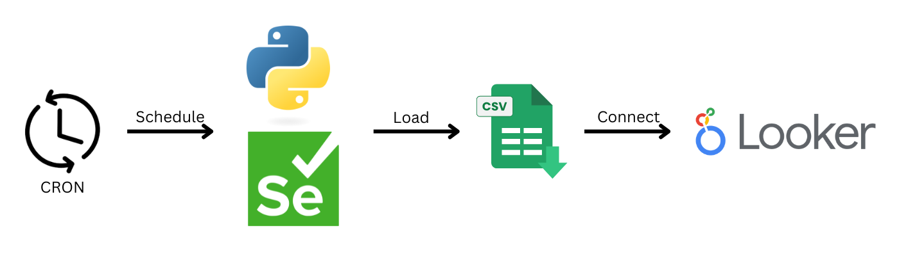
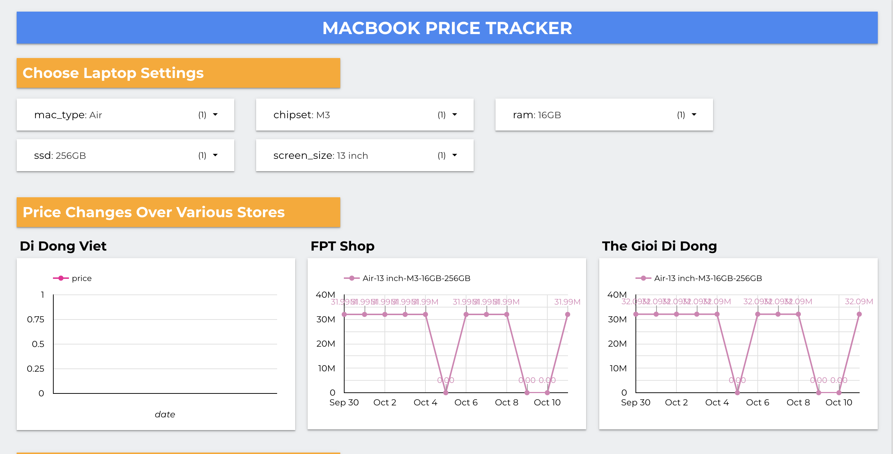

Macbook Price Tracker
Overview
- I created a dynamic price tracking system to monitor MacBook prices across three major Vietnamese retailers: The Gioi Di Dong, FPT Shop, and Di Dong Viet.
- The project uses web scraping techniques to automatically collect pricing data at regular intervals using cron jobs
- The data is stored and organized in Google Sheets, enabling seamless integration with Looker Studio for real-time data visualization and reporting.
- This system allows users to easily track price changes over time, compare offers across different stores, and make informed purchasing decisions
- The project demonstrates my skills in automation, data management, and visualization, with a focus on enhancing user experience.
Source code
Used Tools
Crontab

Python

Selenium

Google Sheets
Looker Studio
Data Flow

1. Web Crawling (Data Collection)
A web crawler is scheduled using a cron job to extract MacBook pricing data from the websites of The Gioi Di Dong, FPT Shop, and Di Dong Viet. The crawler scrapes the product details, including model, price, and availability.
2. Data Processing
After data is collected, it undergoes preprocessing, including cleaning, formatting, and ensuring consistency (e.g., handling different price formats, removing duplicates, and filtering out irrelevant data).
3. Data Loading to Google Sheets
The processed data is then automatically loaded into a designated Google Sheets document using the Google Sheets API. Each crawl appends the latest price data, creating a historical record for each MacBook model across the three stores.
4. Data Visualization with Looker Studio
Google Sheets is integrated with Looker Studio (formerly Google Data Studio) to visualize the pricing trends. Through this connection, Looker Studio generates real-time charts, graphs, and dashboards that display historical price changes, comparisons between retailers, and trends over time.
5. Monitoring
The entire process runs at scheduled intervals, producing logs to keep track of the data flow, ensuring that the Google Sheets and Looker Studio dashboards are automatically updated with prices. This allows users to access up-to-date visual insights and track price fluctuations over time.
Dashboard Overview

The dashboard allows users to select specific MacBook models and configurations (e.g., storage, RAM).
View their price changes over time across three major stores: The Gioi Di Dong, FPT Shop, and Di Dong Viet.
Users can easily compare prices from different retailers through interactive charts and graphs.
Additionally, each entry includes a direct link to the product page at each store for more detailed information or purchase